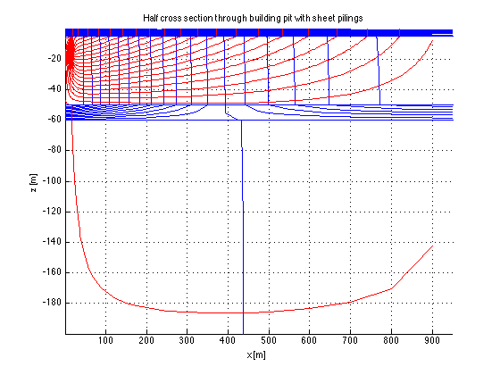

Contents
Example of a cross section with streamlines
%close all;
Define a set of layers,
layers={
% material, top, bottom k
'clay' 0 -5 0.02
'sand' -5 -50 20.0
'clay' -50 -60 0.01
'sand' -60 -200 30.0
};
% get k values from specified layers
top = [layers{:,2}];
bot = [layers{:,3}]; L = [top bot(end)];
kLay= [layers{:,4}];
Grid
The column and row coordinates are refined where needed to have a very detailed result (top and bottom of wells and sheet piling just add coordinates then apply unique to sort out
xGr = [0:2:18, 18:0.2:22 19:0.1:21, 22:2:40, 40:10:100, ... 100:25:250, 250:50:500, 500:100:1000]; yGr = [L L(1:end-1)-0.01 L(end)+0.01, -5:-0.1:-7, -7:-0.5:-14, -15:-0.1:-16, ... -16:-0.5:-19.5, -19.5:-0.1:-20.5, -20.5:-0.5:-25, -25:-5:-50]; gr = grid2DObj(xGr,yGr,'axial',0);
Notice: grid has AXIAL = 0
Special domains in section
xW = [19.9 20 ]; yW =[ 0 -15]; kW=0.0001;
xWells = [19.8 19.9]; yWells=[-6 -11]; FHWells=-5;
inWells = gr.Ym<yWells(1) & gr.Ym>yWells(2) & gr.Xm>xWells(1) & gr.Xm<xWells(2);
inSheet = gr.Ym<yW(1) & gr.Ym>yW(2) & gr.Xm>xW(1) & gr.Xm<xW(2);
% Geological layer numbers for all model layers
iL= floor(interp1([top bot(end)],1:numel(kLay)+1,gr.ym));
Arrays
IBOUND = gr.const(1); IBOUND(1,:) = -1; IBOUND(inSheet) = -1; IBOUND(inWells) = -1; % Conductivities k = gr.const(kLay(iL)'); k(inSheet)=kW; % set k in sheet piling to kW % Fixed heads in wells FH = gr.const(0); FHwells = -6; FH(inWells)=FHwells; % Fixed flows FQ = gr.const(0);
Run model
[Phi,Q,~,~,Psi]=fdm2a(gr,k,k,IBOUND,FH,FQ);
Visualize
figure; axes('nextplot','add','xGrid','on','yGrid','on'); title('Half cross section through building pit with sheet pilings'); xlabel('x [m]'); ylabel('z [m]'); contour(gr.xm,gr.ym,Phi,-5:0.2:0,'b'); contour(gr.xp,gr.yp,Psi,20,'r'); for i=1:size(layers,1) plot(gr.xGr([1 end]),L([i i])); end
Water balance and computed head below pit
sum(sum(Q(inWells))) sum(sum(Q(1,:))) % infiltration through top of model sum(sum(Q)) % overall water balance Phi(gr.ym<-5 & gr.ym>-6,1) % head below building pit
ans = -10.6283 ans = 10.3613 ans = 2.4330e-10 ans = -5.5663 -5.5663 -5.5664 -5.5665 -5.5666 -5.5667 -5.5667 -5.5667 -5.5667 -5.5667 -5.5667